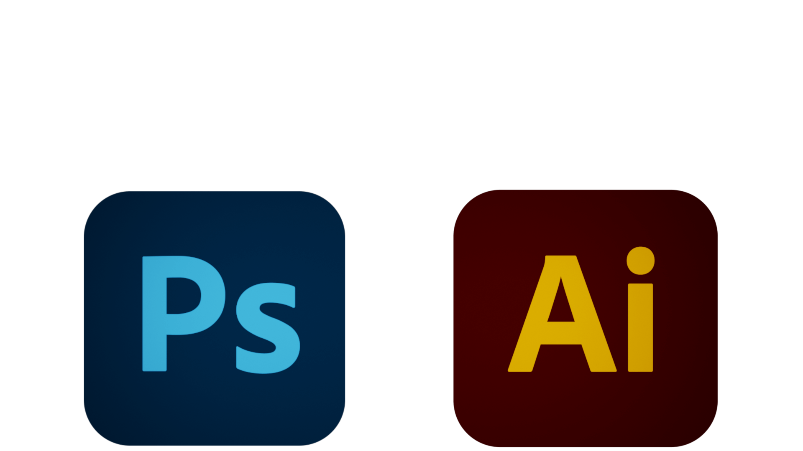

PHOTOSHOP 
Moje doświadczenie i miłość do sztuki dały mi solidne podstawy w dziedzinie sztuk wizualnych i sprawiają, że jestem wyjątkowym projektantem/kreatywnym. Projektowanie jest dużą częścią mojego życia. Moje umiejętności w programach Adobe Photoshop i Adobe Illustrator pozwalają mi tworzyć projekty, które są nie tylko efektowne wizualnie, ale także funkcjonalne i skuteczne. Zaprojektowałem okładki i ulotki, które spotkały się z powszechnym uznaniem. Oprócz moich umiejętności technicznych, posiadam głęboką znajomość zasad projektowania i tego, jak mogą być wykorzystane do tworzenia skutecznych i angażujących projektów. Zawsze uczę się i eksploruję nowe trendy i techniki projektowania, aby być na czele dziedziny i tworzyć projekty, które są świeże i innowacyjne.
My experience and love for art have given me a strong foundation in the visual arts and makes me unique designer/creative. Design is an inseparable part of my life. My skills in Adobe Photoshop and Adobe Illustrator enable me to create designs that are not only visually striking but also functional and effective. I have designed covers and flyers that have received widespread acclaim, thanks to my attention to detail, creativity, and technical expertise. In addition to my technical skills, I have a deep understanding of design principles and how they can be used to create effective and engaging designs. I am always learning and exploring new design trends and techniques, in order to stay at the forefront of my field and create designs that are fresh and innovative.
733743446
szymonglowacki321@gmail.com